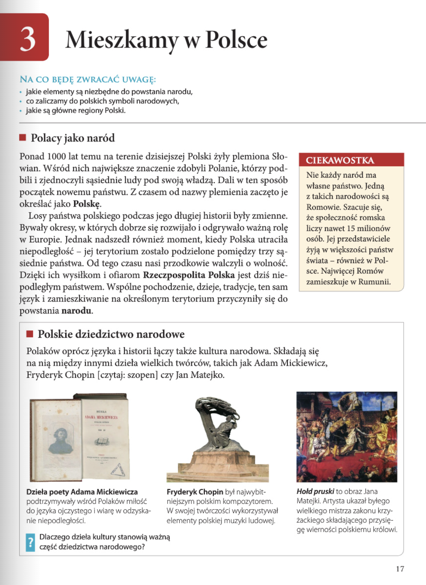
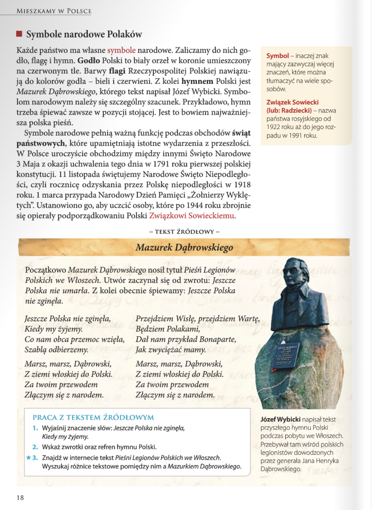
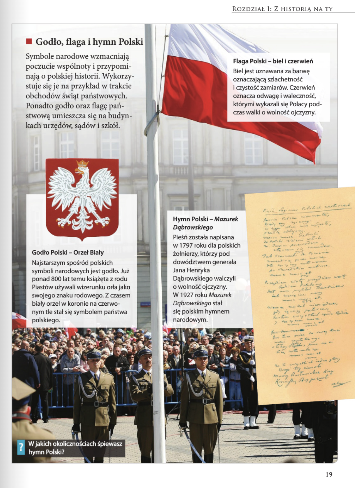
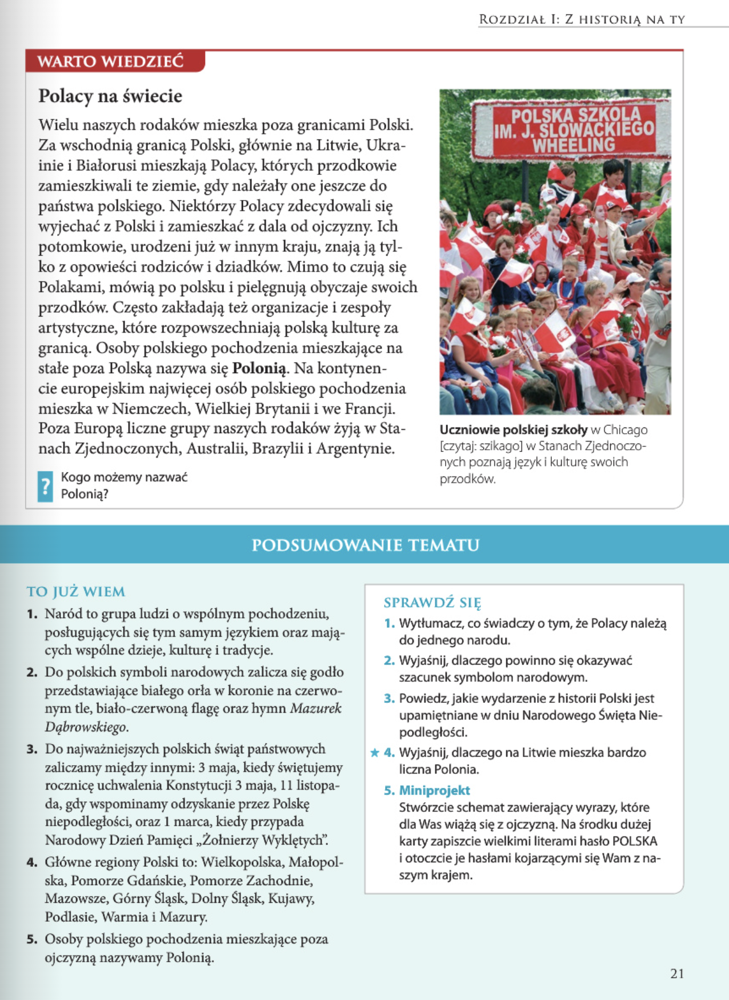

Historia
Rozdział I: Z historią na Ty
3. Mieszkamy w Polsce 17
Zagadnienia
- państwo polskie i jego krainy historyczne;
- mój region częścią Polski;
- naród polski jako zbiorowość posługująca się tym samym językiem, mająca wspólną przeszłość i zamieszkująca to samo terytorium;
- dziedzictwo narodowe;
- polskie symbole narodowe;
- polskie święta państwowe ;
- znaczenie terminów: kraina historyczna, naród, symbole narodowe, Polonia.
Lekcja 3 - Mieszkamy w Polsce >>
strona 17
Polacy jako naród
Ponad 1000 lat temu na terenie dzisiejszej Polski żyly plemiona Słowian. Wsród nich największe znaczenie zdobyli Polanie, którzy podbili i zjednoczyli sąsiednie ludy pod swoją wladzą. Dali w ten sposób początek nowemu państwu. Z czasem od nazwy plemienia zaczęto je określać jako Polskę.
Losy państwa polskiego podczas jego długiej historii były zmienne. Bywały okresy, w których dobrze się rozwijało i odgrywało ważną rolę w Europie. Jednak nadszedł również moment, kiedy Polska utraciła niepodległość - jej terytorium zostało podzielone pomiędzy trzy sąsiednie państwa. Od tego czasu nasi przodkowie walczyli o wolność. Dzięki ich wysiłkom i ofiarom Rzeczpospolita Polska jest dżis niepodległym państwem. Wspólne pochodzenie, dzieje, tradycje, ten sam język i zamieszkiwanie na określonym terytorium przyczynily się do powstania narodu.
CIEKAWOSTKA
Nie każdy naród ma własne państwo. Jedną z takich narodowości są Romowie. Szacuje się, że społeczność romska liczy nawet 15 milionów osób. Jej przedstawiciele żyją w większości państw świata - również w Polsce. Najwięcej Romów zamieszkuje w Rumunii.
Polskie dziedzictwo narodowe
Polaków oprócz języka i historii łączy także kultura narodowa. Składają się na nią między innymi dzieła wielkich twórców, takich jak Adam Mickiewicz, Fryderyk Chopin [czytaj: szopen] czy Jan Matejko.

strona 18

Symbole narodowe Polaków
Każde państwo ma własne symbole narodowe. Zaliczamy do nich godło, flage i hymn. Godło Polski to biały orzel w koronie umieszczony na czerwonym tle. Barwy flagi Rzeczypospolitej Polskiej nawiązują do kolorów godła - bieli i czerwieni. Z kolei hymnem Polski jest Mazurek Dabrowskiego, którego tekst napisal Józef Wybicki. Symbolom narodowym należy się szczególny szacunek. Przykładowo, hymn trzeba śpiewać zawsze w pozycji stojącej. Jest to bowiem najważniejsza polska pieśń.
Symbole narodowe pełnią ważna funkcję podczas obchodów świąt państwowych, które upamiętniają istotne wydarzenia z przeszłości. W Polsce uroczyście obchodzimy miedzy innymi Święto Narodowe 3 Maja z okazji uchwalenia tego dnia w 1791 roku pierwszej polskiej konstytucji. 11 listopada świętujemy Narodowe Święto Niepodległości, czyli rocznicę odzyskania przez Polskę niepodległości w 1918 roku. 1 marca przypada Narodowy Dzień Pamięci „Żołnierzy Wyklętych". Ustanowiono go, aby uczcić osoby, które po 1944 roku zbrojnie się opierały podporządkowaniu Polski Związkowi Sowieckiemu.
Symbol - inaczej znak mający zazwyczaj więcej znaczeń, które można tlumaczyć na wiele sposobów.
Zwiazek Sowiecki(lub: Radziecki) - nazwa państwa rosyjskiego od 1922 roku aż do jego rozpadu w 1991 roku.
Zadanie
Co twoim zdaniem oznaczają słowa hymnu: Jeszcze Polska nie zginęła, kiedy my żyjemy.
Znaczy to, że dopóki żyć będą Polacy, dopóty przetrwa tożsamość narodowa i pamięć o polskiej historii.
strona 19
Godto, flaga i hymn Polski
Symbole narodowe wzmacniają poczucie wspólnoty i przypominają o polskiej historii. Wykorzystuje się je na przykład w trakcie obchodów świąt państwowych. Ponadto godło oraz flagę państwową umieszcza się na budynkach urzędów, sądów i szkół.
Flaga Polski - biel i czerwień
Biel jest uznawana za barwę oznaczającą szlachetność i czystość zamiarów. Czerwień oznacza odwagę i waleczność, którymi wykazali się Polacy podczas walki o wolność ojczyzny.
Godło Polski - Orzeł Biały
Najstarszym spośród polskich symboli narodowych jest godło. Już ponad 800 lat temu książęta z rodu Piastów używali wizerunku orła jako swojego znaku rodowego. Z czasem biały orzeł w koronie na czerwonym tle stał się symbolem państwa polskiego.
Hymn Polski - Mazurek Dąbrowskiego
Pieśń została napisana w 1797 roku dla polskich żołnierzy, którzy pod dowództwem generała Jana Henryka Dąbrowskiego walczyli o wolność ojczyzny. W 1927 roku Mazurek Dąbrowskiego stał się polskim hymnem narodowym.

strona 21

Polacy na świecie
Wielu naszych rodaków mieszka poza granicami Polski. Za wschodnią granica Polski, glównie na Litwie, Ukrainie i Białorusi mieszkają Polacy, których przodkowie zamieszkiwali te ziemie, gdy należały one jeszcze do państwa polskiego. Niektórzy Polacy zdecydowali się wyjechać z Polski i zamieszkać z dala od ojczyzny. Ich potomkowie, urodzeni już w innym kraju, znają ją tylko z opowieści rodziców i dziadków. Mimo to czują się Polakami, mówią po polsku i pielęgnują obyczaje swoich przodków. Często zakładają też organizacje i zespoły artystyczne, które rozpowszechniają polską kulturę za granicą. Osoby polskiego pochodzenia mieszkające na stałe poza Polską nazywa się Polonią. Na kontynencie europejskim najwięcej osób polskiego pochodzenia mieszka w Niemczech, Wielkiej Brytanii i we Francji. Poza Europą liczne grupy naszych rodaków żyją w Stanach Zjednoczonych, Australii, Brazylii i Argentynie.